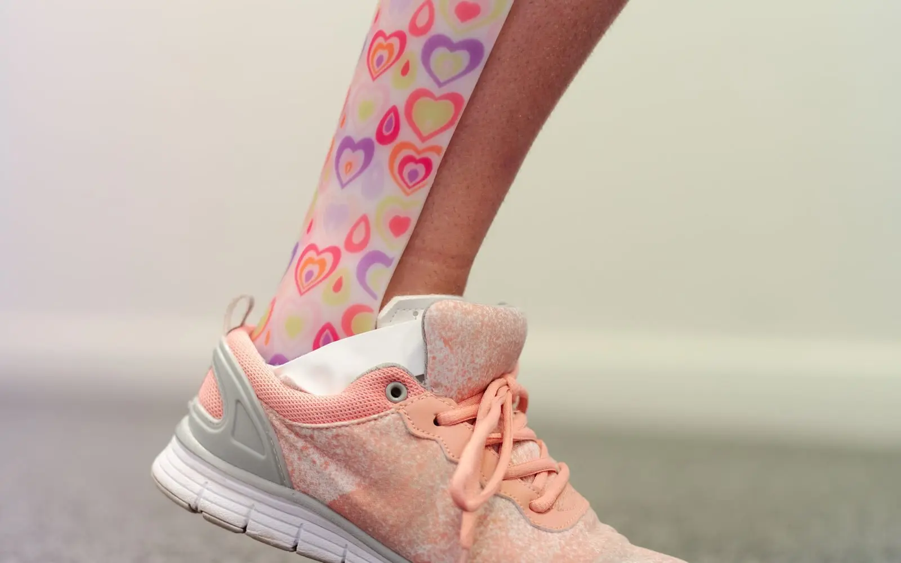
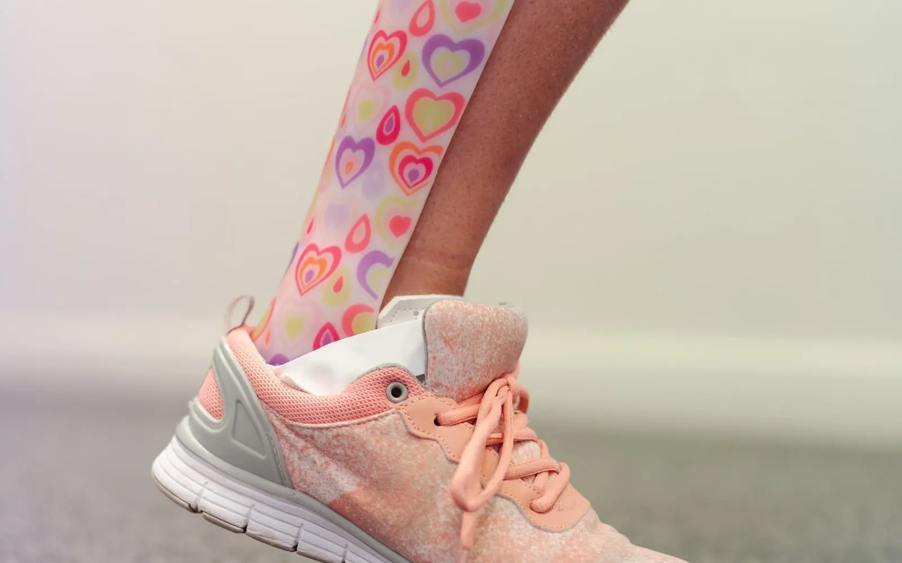

What to Expect at Your First Prosthetic Leg Fitting
A simple, step-by-step look at what happens from your first assessment to the day you walk out on your new leg.


Hearing that your child needs a leg brace can bring up a lot of questions. Will it hurt? Will other kids notice? How will we manage shoes?
These worries are completely normal. The good news is that most children get used to their braces much faster than their parents expect. Here’s what you should know.
A leg brace (often an AFO, which stands for ankle foot orthosis) holds the foot and ankle in a better position. This can help your child:
Children often wear braces if they have cerebral palsy, spina bifida, a muscle condition, low muscle tone, or toe walking that hasn’t stopped on its own. Some children wear them for a short time. Others wear them for years, with a new pair as they grow.
Your child’s doctor, physiotherapist and orthotist will work out which one fits their needs.
We try to make appointments relaxed and even fun.
Tip: bring a favorite toy, tablet or snack. A calm child makes casting quicker and easier for everyone.
Shoes are often the biggest headache for parents. Look for shoes that:
Bring a pair to your fitting and we’ll check them together.
Children grow quickly, so most need a new brace about once a year. Some need one sooner during a growth spurt.
Signs your child may have outgrown their brace:
If you notice any of these, book a check. Don’t wait for the next planned visit.
Braces are one part of a bigger plan that often includes physiotherapy, exercises and regular check-ups. We’re happy to work alongside your child’s therapists.
Learn more about our pediatric orthotics service, or read AFO vs KAFO vs HKAFO to understand the different brace types.
This article is general information, not medical advice. Please speak to your child’s doctor or our team about your child’s needs.
There's no fixed age. Some children start before they walk, to help with standing. Others start later. It depends on your child's condition and their therapy plan.
It depends on why they wear it. Some braces are for walking time, some are for night only and some are for most of the day. We'll give you a clear wearing plan.

A simple, step-by-step look at what happens from your first assessment to the day you walk out on your new leg.

The letters look confusing, but they just tell you which joints the brace covers. Here's how the three main leg braces compare.

Some soreness is normal at first. Real pain isn't. Here's how to tell the difference and stay comfortable in your new leg.
Our team is happy to help. Call us or book an assessment in Rawalpindi.